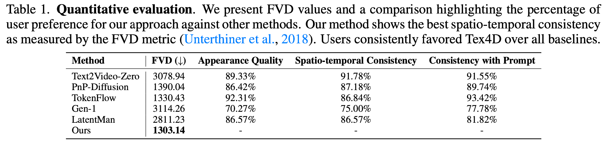

Our method generates multi-view consistent foreground objects with a diverse set of styles and prompts.
Click to pause the following animations.
Prompt: a ghost flashed a magical light, causing dramatic shifts in lighting.
Prompt: a dingy, magic King Boo, flashing a weird light, static background.
Prompt: a sprite of fiery plums tilts its head, in full color.
Prompt: a spirit in neon tilts its head, cyberpunk style.
Prompt: a sketch of bot dancing in a sandy beach, Van-Gogh style.
Prompt: the Joker dancing in the bright stage.
Prompt: a monster dancing in a mysterious jungle.
Prompt: a machinery swimming in the sea.
Prompt: a Stormtrooper swimming in the sea.
Prompt: the Ironman turns steering wheels in the space station.
3D meshes are widely used in computer vision and graphics because of their efficiency in animation and minimal memory footprint. They are extensively employed in movies, games, AR, and VR, leading to the creation of a vast number of mesh sequences. However, creating temporally consistent and realistic textures for these mesh sequences remains labor-intensive for professional artists. On the other hand, video diffusion models have demonstrated remarkable capabilities in text-driven video generation, enabling users to create countless video clips based solely on their imagination. Despite their strengths, these models often lack 3D geometry awareness and struggle with achieving multi-view consistent texturing for 3D mesh sequences. In this work, we present Tex4D, a zero-shot approach that integrates inherent 3D geometry knowledge from mesh sequences with the expressiveness of video diffusion models to produce multi-view and temporally consistent 4D textures. Given an untextured mesh sequence and a text prompt as inputs, our method enhances multi-view consistency by synchronizing the diffusion process across different views through latent aggregation in the UV space. To ensure temporal consistency, we leverage prior knowledge from a conditional video generation model for texture synthesis. However, straightforwardly combining the video diffusion model and the UV texture aggregation leads to blurry results. We analyze the underlying causes and propose a simple yet effective modification to the DDIM sampling process to address this issue. Additionally, we introduce a reference latent texture to strengthen the correlation between frames during the denoising process. To the best of our knowledge, Tex4D is the first method designed for 4D scene texturing. Extensive experiments demonstrate its superiority in producing multi-view and multi-frame consistent videos based on untextured mesh sequences.
Pipeline: Given a mesh sequence and a text prompt as inputs, Tex4D generates a UV-parameterized texture sequence that is both globally and temporally consistent, aligning with the prompt and the mesh sequence. We sample multi-view video sequences using a depth-aware video diffusion model. At each diffusion step, latent views are aggregated into UV space, followed by multi-view latent texture diffusion to ensure global consistency. To maintain temporal coherence and address self-occlusions, a Reference UV Blending module is applied at the end of each step. Finally, the latent textures are back-projected and decoded to produce RGB textures for each frame.
In our experiments, we took/generated mesh sequences from
We conducted a comprehensive A/B user study. Our study involved 67 participants who provided a total of 1104 valid responses based on six different scenes drawn from six previous works, with each scene producing videos from two different views.
Note: For Frechet Video Distance (FVD) metric, we borrow the evaluation code from here.
@article{bao2024tex4d,
title={Tex4D: Zero-shot 4D Scene Texturing with Video Diffusion Models},
author={Jingzhi Bao and Xueting Li and Ming-Hsuan Yang},
journal={arXiv preprint arxiv:2410.10821},
year={2024}
}